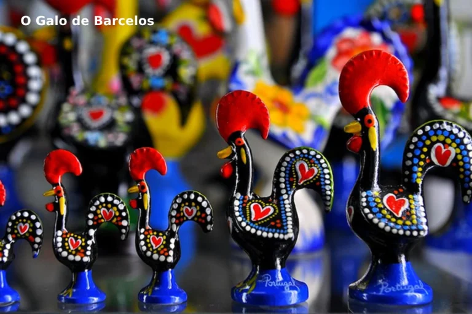
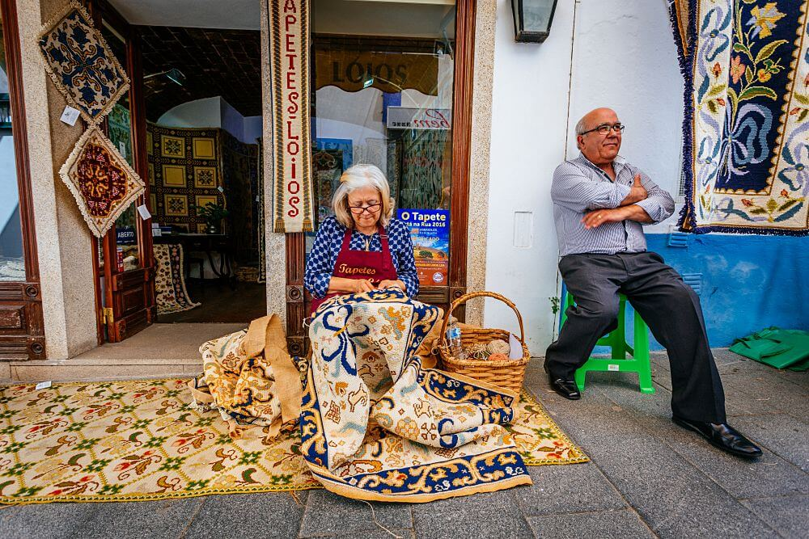
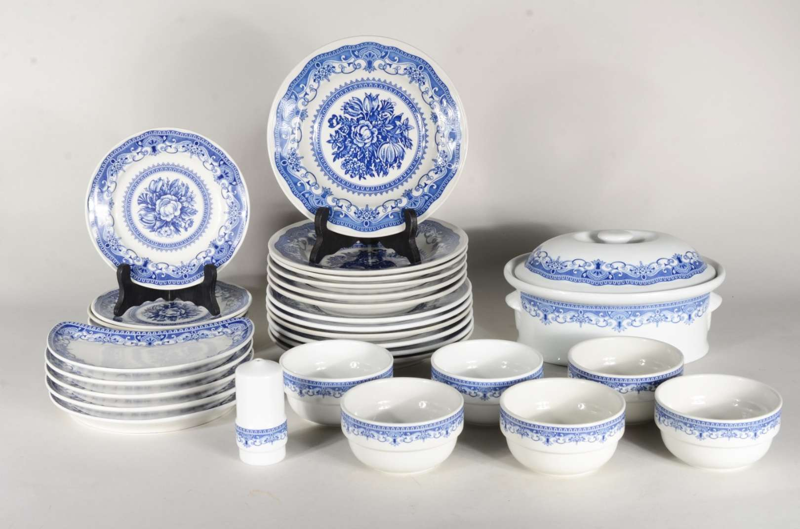
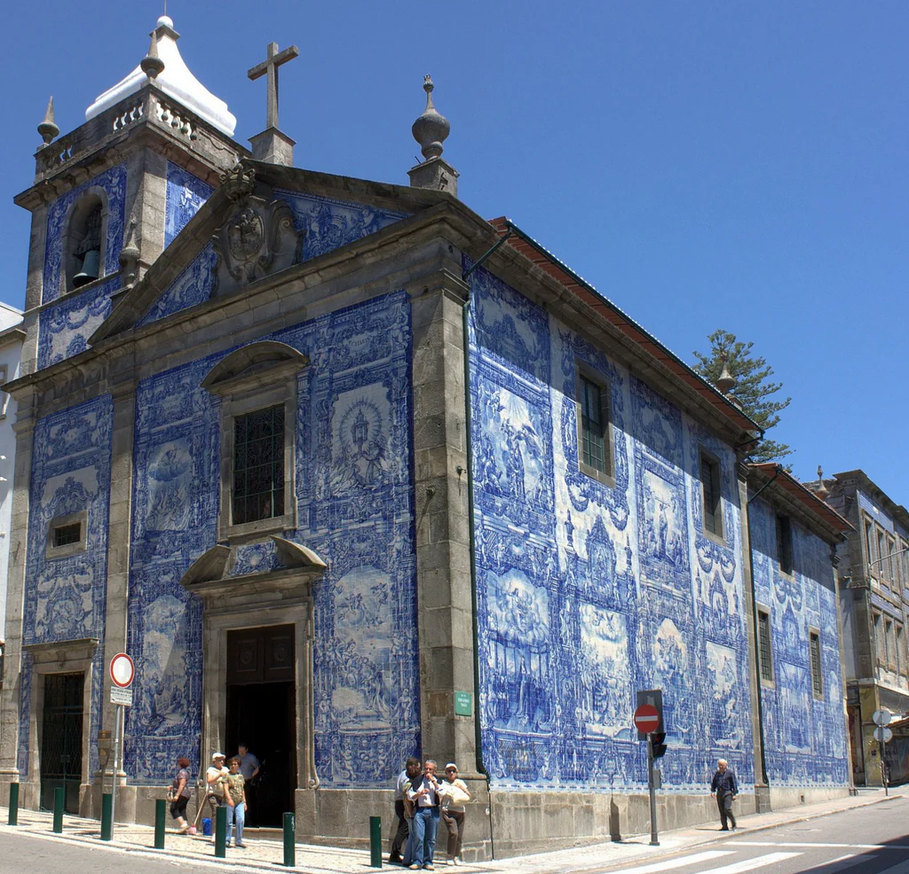

Tradições e costumes

Galo de Barcelos
O Galo de Barcelos é um símbolo popular português que representa a sorte e a proteção; Instrumentos musicais tradicionais: Portugal possui uma variedade de instrumentos musicais tradicionais, como a guitarra portuguesa, a viola de fado, o acordeão e o bandolim.

Tapetes de Arraiolos
Os tapetes de Arraiolos são tapetes de lã feitos à mão que são caracterizados pelos seus padrões geométricos e pelas suas cores vibrantes.

Decoração de pratos
A decoração de pratos é uma tradição portuguesa que consiste em decorar pratos com motivos tradicionais.

Capela das Almas, Porto
Famosa pelos seus azulejos azuis e brancos, a Capela das Almas é um dos pontos turísticos mais conhecidos do Porto, representando a arte e a religião em Portugal.